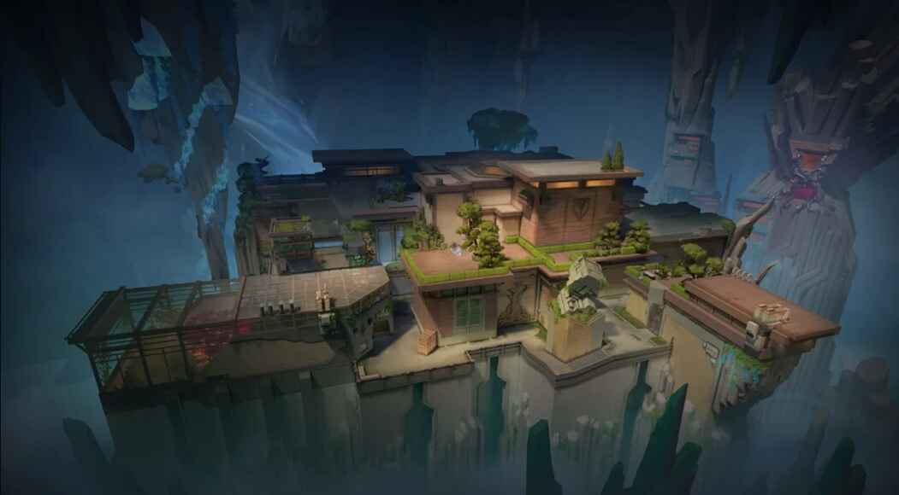

Menaklukkan Abyss: Panduan Lengkap Map Valorant Paling Seru 2025

Abyss hadir sebagai peta ke-11 di Valorant dan langsung menarik perhatian karena keunikannya. Dengan desain yang berbeda dari map lainnya, Abyss memperkenalkan konsep tanpa batas. Artinya, tidak ada pengaman di tepi-tepi map, dan satu langkah salah bisa membuat kamu jatuh ke dalam kehampaan dan langsung mati. Map ini berlokasi di bawah pulau Jan Mayen, Norwegia, menghadirkan atmosfer bawah tanah dengan kombinasi gua alami dan desain industrial futuristik.
Sejarah Singkat dan Estetika Abyss
- Dirilis: Patch 8.11, 11 Juni 2024
- Lokasi: Basis rahasia di bawah tanah Jan Mayen
- Fitur utama: Tidak ada batas luar, area vertikal, ledges, death drops, serta pintu yang bisa dihancurkan
Atmosfer Abyss sangat khas: gelap, intens, dengan nuansa misteri yang kuat. Pemain perlu menguasai area-area map ini dengan sangat cermat, karena tiap sudut menyimpan peluang maupun bahaya.
Struktur Map Abyss: Tiga Jalur, Banyak Ancaman
Abyss memiliki struktur tiga jalur klasik: A Site, B Site, dan Mid. Tapi ada sentuhan unik: rotasi cepat lewat death drop, ledges berbahaya, dan jalur vertikal ekstrem. Kombinasi ini menciptakan gameplay yang cepat dan penuh risiko.
Detail Area Map Abyss
- A Site: Area sempit dengan banyak choke point. Ada A Tower yang bisa diakses lewat tali ascender.
- B Site: Lebih terbuka dan bertingkat, dengan beberapa entry point termasuk dari B Danger.
- Mid: Titik tengah map dengan death drop besar. Menjadi pusat rotasi dan duel intens.
Breakable Doors & Shortcut
Beberapa jalur memiliki pintu yang bisa dihancurkan (120 HP). Ini bisa jadi jalur masuk dadakan atau strategi menyergap musuh. Selain itu, banyak shortcut berisiko tinggi namun bisa dimanfaatkan buat outplay cepat.
Callout Penting di Abyss
| Area | Callout | Keterangan |
|---|---|---|
| A Site | A Tower | High ground atas A |
| Ascender | Tali ke A Tower | |
| A Back Site | Belakang A Site | |
| A Bridge | Penghubung A ke Mid | |
| B Site | B Tower | Posisi atas B |
| B Main | Jalur utama masuk B | |
| B Danger | Area sempit tanpa pagar | |
| Mid | Mid Library | Terowongan Mid ke B |
| Mid Catwalk | Jalur atas dengan celah | |
| Vent | Jalur rahasia ke A Tower |
Mekanisme Unik Abyss
Death Drop dan Ledges
Banyak jalur yang bisa membuat kamu atau musuh langsung jatuh. Ini bisa dimanfaatkan untuk strategi outplay, terutama dengan Agent seperti Raze atau Breach yang punya knockback.
Breakable Doors
Strategis banget buat mengejutkan musuh atau membuat jalur rotasi baru. Harus pintar menentukan kapan menghancurkannya.
Vertical Gameplay
Ascender di A Tower dan B Tower membuat permainan vertikal jadi lebih kompleks. Kamu harus siap menghadapi duel dari atas dan bawah sekaligus.
Strategi Bermain Abyss
- Selalu cek posisi sebelum jalan, apalagi dekat pinggiran.
- Manfaatkan jalur shortcut buat rotasi cepat.
- Gunakan utility untuk dorong musuh jatuh (contoh: Blast Pack Raze, Breach stun).
- Komunikasi jadi kunci, terutama saat musuh dekat pinggiran map.
Agent Terbaik di Abyss dan Alasannya
Kombinasi Ideal Agent
- Jett: Dash bisa selamat dari pinggir, cocok untuk Operator.
- Raze: Blast Pack untuk outplay dan dorong musuh jatuh.
- Omen: Teleport ke spot sulit, smoke yang fleksibel.
- Cypher: Trapwire di pinggir ledge, kamera buat info global.
- Sova: Scan sudut gelap, lineup post-plant.
- Breach: Knockback utility buat ledge kill.
- KAY/O: Suppress dan flash panjang buat deny entry.
- Astra: Gravity Well sangat efektif di pinggir tebing.
- Neon: Movement cepat buat hindari kejatuhan saat rotasi.
Highlight Agent Favorit
- Jett: Mobilitas dan survivability di ledge sangat penting.
- Raze: Kemampuan ‘dorong’ lawan sangat efektif di map ini.
- Cypher: Trap wire di edge bisa jadi pembunuh senyap.
- Sova: Scan dan spam dinding plastik B Site sangat kuat.
Analisis Area Map
A Site
Area sempit dan vertikal. Kontrol A Tower sangat penting. Smoke di tower dan backsite bisa bantu attacker masuk. Defender bisa manfaatkan Operator dari tower untuk mengontrol site.
B Site
Area terbuka dengan banyak jalur masuk dan death drop. Trap wire di B Danger bisa bantu jaga flank. Entry attacker sering dilakukan lewat kombinasi B Main dan Danger.
Mid
Mid Library jadi tempat duel paling sering. Mid Catwalk rawan jadi spot Operator. Harus hati-hati dengan death drop di tengah tanpa pengaman. Vent jadi jalur rotasi cepat ke A Site.
Makro Taktik dan Rotasi
- Attacker: Gunakan death drop buat rotasi mendadak. Fake plant ke B, terus masuk A via Vent efektif banget.
- Defender: Fokus di tower dan ledge, minimalkan peek yang berisiko. Jaga jalur pintas pakai trap atau kamera.
- Retake: Gunakan smoke dan flash, manfaatkan verticalitas buat posisi advantage.
Senjata Terbaik di Abyss
- Operator: Ideal buat kontrol area panjang seperti Mid dan Bridge.
- Vandal: Headshot kill, bagus buat duel jarak jauh di ledge.
- Phantom: Ideal buat close combat dan spam dinding plastik.
- Sheriff: Cocok buat edge fight saat eco round.
- Outlaw: Sniper alternatif buat flank atau push lewat Death Drop.
Utility dan Lineup Wajib
- Sova: Shock dart ke default plant dari Mid Library.
- Omen: Smoke ke B Under atau A Tower untuk deny posisi musuh.
- Raze: Satchel untuk rush masuk B atau dorong musuh jatuh.
- Cypher: Trap di ledge B Danger sangat efektif untuk flank kontrol.
Kesalahan Fatal yang Harus Dihindari
- Jatuh karena salah langkah atau peek tanpa backup.
- Abaikan pinggiran map saat retake atau plant.
- Bawa Operator di area sempit seperti Library.
- Underrate kemampuan musuh untuk dorong lewat utility.
Tips Pro Bermain di Abyss
- Kombinasi flash dan knockback efektif untuk eliminasi cepat di tepi map.
- Awal round, Operator di Mid bisa langsung ambil kontrol area penting.
- Selalu gunakan utility sebelum masuk sudut sempit.
- Komunikasikan jalur rotasi dan musuh yang terdeteksi secepatnya.
Komunikasi dan Kerja Tim
- Gunakan callout jelas: “A Tower clear”, “B Fallen”, “Mid Danger 1”, dan lainnya.
- Tentukan role: siapa pegang Mid, siapa anchor site, siapa rotator cepat.
- Jangan entry tepi map sendirian, timing dan backup sangat penting.
Meta dan Perkembangan Patch Abyss
Abyss membuka ruang bagi banyak eksperimen strategi, terutama karena death drop dan pintu hancur yang bisa diubah lewat update. Kombinasi agent mobile dan utility dorong makin mendominasi meta tiap patch.
FAQ Abyss
- Q: Apa Abyss selalu lebih mudah buat attacker?
A: Di awal iya, tapi seiring waktu defender makin jago ambil posisi ledge dan gunakan trap yang efektif. - Q: Agent paling wajib?
A: Jett dan Omen. Raze dan Cypher juga sangat efektif dalam skema edge control. - Q: Cara menghindari sering jatuh?
A: Selalu perhatikan posisi, jangan over-peek, pelajari map lewat mode custom.
Abyss menawarkan pengalaman yang tidak bisa ditemukan di map Valorant lainnya. Setiap langkah, keputusan, dan penggunaan utility bisa menentukan hasil akhir pertandingan. Kemenangan di map ini lebih dari sekedar tembakan akurat, tapi juga soal adaptasi, kerja sama, dan pemahaman taktis.
Jangan ragu buat eksplorasi jalur tersembunyi, maksimalkan potensi agent yang kamu pilih, dan terus berlatih menghindari kesalahan kecil yang bisa jadi fatal. Dan kalau kamu ingin meningkatkan koleksi skin atau VP sebelum push rank di Abyss, kamu bisa langsung Top Up Valorant di Topupgim. Prosesnya cepat, aman, dan pastinya terpercaya.
Selamat bermain dan semoga kamu jadi master di Abyss!